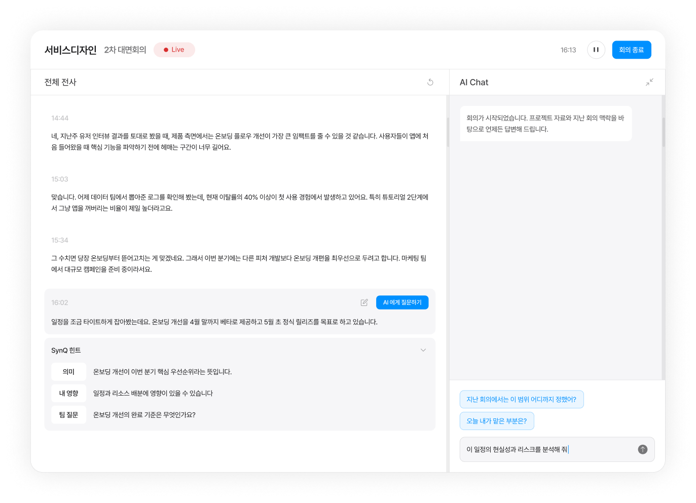
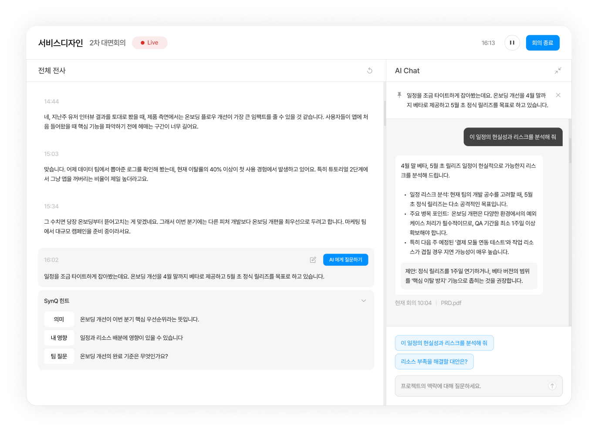
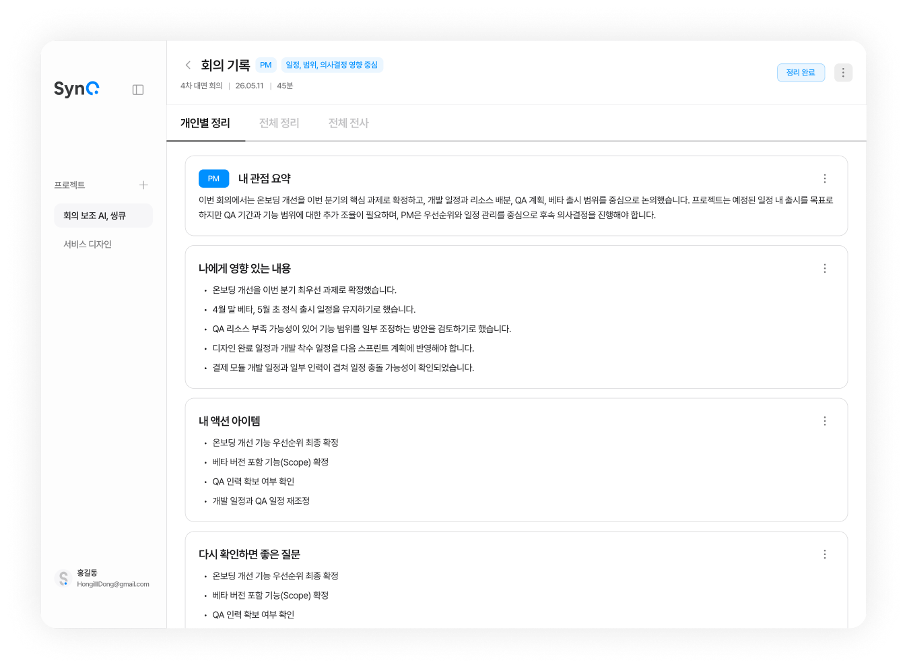

같이 들었지만
다르게 이해하는 순간을 없앱니다
SynQ는 프로젝트 자료와 지난 회의 맥락을 학습한 AI가 회의 중 실시간으로 발언의 의미, 내 역할에 미치는 영향, 팀과 맞춰야 할 질문을 연결해 주는 협업 AI입니다.
카카오 · 네이버 · 구글 계정으로 바로 시작 · 데스크톱 브라우저에 최적화

회의는 함께 하지만, 이해는 항상 함께 이루어지지 않습니다
같은 문장을 들어도 각자 먼저 떠올리는 것이 다릅니다. 그 간극은 회의가 끝난 뒤에야 드러나고, 다시 맞추는 데 또 다른 회의가 필요해집니다.
일정과 범위
베타 4월 말, 정식 5월 초. QA 기간은 확보되는지, 어디까지가 베타 범위인지부터 계산합니다.
화면에 미치는 영향
온보딩 3단계 화면이 전부 바뀌는지, 디자인 완료 일정이 개발 착수 전에 맞춰지는지를 먼저 떠올립니다.
구현 난이도와 리스크
결제 모듈 연동 테스트와 일정이 겹치는지, 예외 케이스 처리에 얼마나 걸릴지를 계산합니다.
SynQ는 이 같이 들었지만 다르게 이해하는 순간을 회의 중에 바로 좁힙니다. 놓친 의미를 즉시 이해하고, 내 역할 기준의 영향을 파악하고, 팀과 맞춰야 할 질문을 놓치지 않도록.
회의 중, 회의 후, 그리고 그 다음 회의까지
기록보다 이해, 이해보다 실행까지. SynQ는 회의의 세 순간을 하나로 잇습니다.
실시간 전사 위에, 발언마다 SynQ 힌트
회의를 녹음하면 발언이 실시간으로 전사됩니다. 중요한 발언에는 SynQ가 프로젝트 자료와 지난 회의를 근거로 세 가지 힌트를 붙여 줍니다.
흐름을 끊지 않고, 궁금한 발언을 골라 바로 질문
이해가 필요한 순간 발언을 선택해 “AI에게 질문하기”를 누르면, 그 발언을 고정한 채 나만의 AI Chat에서 바로 물어볼 수 있습니다. 답변은 PRD 같은 프로젝트 자료와 지난 회의 기록을 근거로 돌아옵니다.
- “이 일정의 현실성과 리스크를 분석해 줘” — 답변 끝에 출처(현재 회의 10:04 · PRD.pdf)를 함께 표시
- “지난 회의에서는 이 범위 어디까지 정했어?” — 지난 회의 맥락까지 이어서 답변
- 내 질문과 답변은 나에게만 보이는 개인 AI Chat에 남습니다

회의가 끝나면, 내 역할과 관점 기준으로 자동 정리
종료와 동시에 전사본이 저장되고, 참여자마다 다른 정리본이 만들어집니다. PM에게는 일정·범위·의사결정 중심으로, 개발자에게는 기술 리스크 중심으로.
- 내 관점 요약 · 나에게 영향 있는 내용 · 내 액션 아이템
- 다시 확인하면 좋은 질문 — 팀과 맞춰야 할 것을 놓치지 않도록
- 개인별 정리 / 전체 정리 / 전체 전사를 오가며 확인, 회의 후에도 AI Chat 이어가기

프로젝트 하나로 시작해, 회의가 쌓일수록 똑똑해집니다
SynQ는 회의를 프로젝트 단위로 묶습니다. 자료와 지난 회의가 쌓일수록 다음 회의의 힌트와 답변이 정확해집니다.
프로젝트 만들기
프로젝트를 만들고 초대 링크로 팀원을 부릅니다. 참여자는 각자 역할과 관점을 설정합니다.
참고 자료 올리기
PRD, 기획서, 디자인 문서 등 프로젝트 자료를 올리면 AI가 회의의 근거로 사용합니다.
회의 시작
마이크만 켜면 됩니다. 실시간 전사와 SynQ 힌트, 개인 AI Chat이 회의를 따라갑니다.
기록으로 남기기
종료하면 자동으로 정리됩니다. 이 기록은 다음 회의의 맥락이 되어 다시 쓰입니다.
같은 회의, 나에게 맞춘 정리
가입할 때 역할과 관심 관점을 고르면, 힌트의 “내 영향”과 회의 후 정리가 그 기준으로 맞춰집니다. 프로젝트마다 다르게 설정할 수도 있습니다.